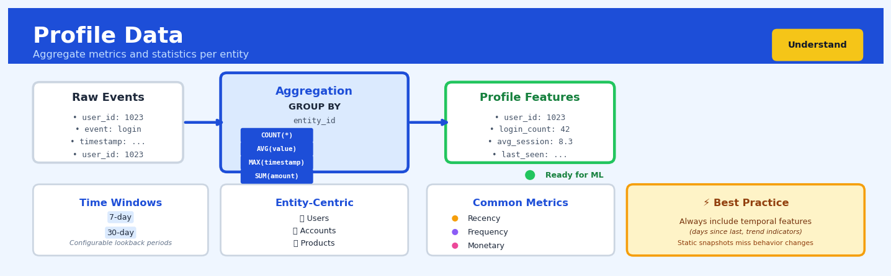

Profile Data#


Profile Data is a core transformation in the Understand workflow.
The 60-Second Version#
What it does: Profile Data automatically scans your dataset and produces a comprehensive health check for every column—revealing patterns, problems, and properties you need to know before making decisions with that data.
When to use it: Run this the moment you receive any new dataset, before any analysis, dashboard, or model—think of it as the mandatory first diagnostic that catches issues while they’re still cheap to fix.
What you get back: A structured report showing what’s actually in each column (types, ranges, missing values, outliers, distributions) so you can immediately spot data quality issues, understand what you’re working with, and avoid building analysis on broken foundations.
Difficulty |
Easy |
Typical runtime |
Seconds on 100K rows |
What you bring |
Any dataset (CSV, database table, spreadsheet) |
What you get |
Statistical summary report for every variable |
Heuristix bucket |
Understand — Statistical Analysis & Profiling |
Profile Data isn’t optional—decisions made on data you haven’t profiled are decisions made blind.
Learning Objectives#
After reading this chapter, a business user will be able to:
Identify situations where data quality issues or distribution anomalies might invalidate business decisions, and recognise when systematic profiling should precede analysis.
Read profiling reports to spot red flags such as unexpected missing values, outliers, or skewed distributions, and translate these findings into plain-language explanations for non-technical stakeholders.
Decide whether a dataset is fit-for-purpose for a specific business question, or determine what data cleaning steps must occur before proceeding with reporting or modelling.
After reading this chapter, a data scientist will be able to:
Execute comprehensive data profiling workflows that generate appropriate statistics for numeric, categorical, temporal, and text variables while handling mixed-type columns and edge cases like infinite values.
Configure profiling depth and statistical tests based on dataset size and computational constraints, balancing the trade-off between diagnostic completeness and execution time.
Diagnose misleading profiling results caused by sampling bias, encoding errors, or inappropriate statistical measures, and select alternative validation approaches when standard profiling falls short.
Overview#
Profile Data is a systematic statistical technique for generating comprehensive summary statistics, distributional diagnostics, and data quality assessments across all variables in a dataset. It belongs to the family of exploratory data analysis (EDA) and data quality methods, serving as the foundational step in any analytical workflow. The technique computes univariate statistics, identifies anomalies, characterises distributional properties, and flags potential data integrity issues—providing the analyst with a complete “fingerprint” of their data before modelling or further analysis.
When to Use This#
Initial data ingestion: When you receive a new dataset from a client, vendor, or internal system and need to understand its structure, completeness, and quality before any downstream work.
Pre-modelling diagnostics: Before fitting any predictive or inferential model, use profiling to verify that variables meet distributional assumptions and to identify transformations that may be required.
Data pipeline monitoring: When building production data pipelines, profile data at key checkpoints to detect schema drift, value drift, or emerging data quality issues.
Data migration validation: After migrating data between systems, profile both source and target to verify that the migration preserved statistical properties.
Feature engineering validation: After creating derived features, profile them to ensure they behave as expected and do not introduce pathological values.
Client deliverable preparation: When preparing data for handoff to stakeholders, profiling provides a quality certificate that documents what was delivered.
DO NOT use this when you need multivariate relationships: Profiling is inherently univariate; use correlation analysis, clustering, or dimensionality reduction for variable interactions.
DO NOT use this as a substitute for domain validation: Statistical profiles cannot verify semantic correctness—a column of ages averaging 35 may still contain invalid values if “age” was supposed to represent machine operating hours.
DO NOT use this on streaming data without aggregation: Profiling assumes a static dataset; for streaming contexts, aggregate windows first or use online statistics methods.
Questions This Answers#
Data Quality & Readiness#
Is this data even usable, or are we going to waste weeks building reports on garbage?
How much of our customer database is actually complete—can we trust these records for the campaign?
Why are we seeing negative revenue figures and 150-year-old customers in this dataset?
Before we spend $200K on this analytics project, do we actually have the data quality to support it?
Which fields in our CRM are so poorly populated that we shouldn’t rely on them for segmentation?
Understanding What We’re Working With#
What’s actually in this dataset we just purchased from the vendor—is it what they promised?
We’ve never analysed our manufacturing sensor data before—where do we even start?
Are there obvious patterns or red flags in this data that we should know about before presenting to the board?
How much variation exists in our pricing data across regions—is it consistent or all over the place?
What’s the typical range for customer lifetime value, and how many outliers are skewing our averages?
Decision Support & Risk Assessment#
Should we proceed with this data source for our machine learning model, or will it cause problems down the line?
Which variables in our sales data have the most missing information, and does that kill our cross-selling analysis?
Is the distribution of our transaction data normal enough for the statistical tests finance wants to run?
We’re merging three regional databases—are they compatible, or will we create a mess?
How It Works#
Imagine you’ve just inherited a massive filing cabinet from a retiring colleague—thousands of customer records spanning decades. Before you can use any of it, you need to understand what you actually have. So you pull a systematic inventory: you count how many folders are in each drawer, check which ones have missing phone numbers, notice that some addresses are formatted as “123 Main St” while others say “Main Street 123,” discover that the age field contains obvious errors like “215 years old,” and find that 80% of customers are concentrated in just three cities. You create a one-page summary report covering each drawer, each field type, and every quirk. That’s data profiling—before you make any decisions, you systematically inspect every corner of your data to understand its shape, quality, and quirks.
BEFORE: Raw Dataset AFTER: Profile Report
┌─────────┬─────┬────────┬─────┐ ┌──────────────────────────────┐
│ name │ age │ city │ sal │ │ VARIABLE: age │
├─────────┼─────┼────────┼─────┤ │ Type: Numeric │
│ Alice │ 28 │ NYC │ 50K │ │ Count: 5 (0 missing) │
│ Bob │ 215 │ Boston │ 60K │ │ Mean: 67.4 │
│ Carol │ 34 │ NYC │ ??? │ │ Min: 28 | Max: 215 │
│ David │ 45 │ NYC │ 70K │ │ ⚠ Outlier detected: 215 │
│ Eve │ 35 │ Paris │ 55K │ └──────────────────────────────┘
└─────────┴─────┴────────┴─────┘ ┌──────────────────────────────┐
│ │ VARIABLE: city │
│ │ Type: Categorical │
▼ │ Count: 5 (0 missing) │
PROFILING PROCESS │ Unique: 3 │
┌──────────────────┐ │ Top value: "NYC" (60%) │
│ 1. Count rows │ └──────────────────────────────┘
│ 2. Type each var │ ┌──────────────────────────────┐
│ 3. Compute stats │ │ VARIABLE: sal │
│ 4. Find nulls │ │ Type: Mixed │
│ 5. Flag outliers │ │ Count: 5 (1 missing: "???") │
│ 6. Check uniques │ │ ⚠ Data quality issue │
└──────────────────┘ └──────────────────────────────┘
Step 1: Identify each variable’s type. The profiler examines every column and determines whether it contains numbers, text categories, dates, or mixed content. It doesn’t just trust the label—it actually inspects the values to catch cases where a “salary” column accidentally contains text entries.
Step 2: Count the basics for each variable. For every column, compute how many values exist, how many are missing or null, and what percentage is complete. This immediately reveals if you’re working with sparse data or if certain fields are rarely populated.
Step 3: Generate statistics appropriate to each type. For numeric variables, calculate summary measures like average, minimum, maximum, and standard deviation. For categorical variables, count how many unique values exist and identify the most common categories. For dates, find the range and check for impossible values like birthdates in the future.
Step 4: Hunt for anomalies and outliers. Flag values that seem impossible or suspicious—ages over 120, negative prices, ZIP codes with letters, or dates from the year 1802 in a customer database created last year. Identify extreme values that might be data entry errors.
Step 5: Assess distributions and patterns. Examine how values are spread out. Are most customers between ages 25-35, with a few octogenarians? Is 90% of revenue coming from 10% of products? Understanding these patterns reveals the data’s true shape.
Step 6: Compile everything into a comprehensive report. Organize all findings variable-by-variable into a structured summary that serves as both a reference guide and a quality checklist, highlighting what’s clean and what needs attention.
The key insight: Profiling works because systematic inspection across every dimension reveals both the structure and the health of your data—it’s the diagnostic checkup that catches problems before they become analytical mistakes.
The Intuition#
Imagine you are a physician conducting a comprehensive health check-up. Before diagnosing any specific condition, you measure vital signs: blood pressure, heart rate, temperature, weight, and cholesterol levels. Each measurement tells you something about one aspect of the patient’s health, and taken together, they form a baseline profile. If any measurement falls outside normal ranges, you investigate further. This is precisely what data profiling does for a dataset—it takes the “vital signs” of every variable.
Just as the physician does not attempt to diagnose heart disease from a blood pressure reading alone but uses it as an indicator that warrants deeper investigation, profiling does not answer business questions directly. Instead, it answers the meta-question: “Is this data ready to answer business questions, and where might problems lurk?” A variable with 40% missing values, a numeric column with a standard deviation of zero, or a categorical field with 50,000 unique values when you expected 5—these are the elevated temperatures and abnormal heart rates of your data.
The power of profiling lies in its comprehensiveness and systematisation. An experienced analyst might glance at a few histograms and compute some means, but this ad-hoc approach is error-prone and non-reproducible. Systematic profiling computes the same battery of statistics across every variable, flags anomalies against configurable thresholds, and produces a standardised report. This makes profiling auditable, comparable across time periods or data sources, and suitable for automation in production pipelines.
The Mathematics#
Formal Problem Setup#
Let \(\mathbf{X}\) be a dataset consisting of \(n\) observations and \(p\) variables, represented as a matrix \(\mathbf{X} \in \mathbb{R}^{n \times p}\) for numeric variables or as a collection of vectors for mixed types. For each variable \(j \in \{1, \ldots, p\}\), we denote the observed values as \(\{x_{1j}, x_{2j}, \ldots, x_{nj}\}\). Let \(n_j^{\text{obs}}\) denote the number of non-missing observations for variable \(j\), and let \(n_j^{\text{miss}} = n - n_j^{\text{obs}}\) denote the missing count.
Measures of Central Tendency#
For numeric variables, the sample mean is computed as:
The sample median is the value \(\tilde{x}_j\) such that:
where \(x_{(k)}\) denotes the \(k\)-th order statistic.
The mode is defined as:
Measures of Dispersion#
The sample variance uses the unbiased estimator:
The sample standard deviation is \(s_j = \sqrt{s_j^2}\).
The coefficient of variation provides a scale-invariant measure of dispersion:
The interquartile range (IQR) is:
where \(Q_1\) and \(Q_3\) are the 25th and 75th percentiles respectively.
Higher Moments and Shape Statistics#
The sample skewness measures asymmetry:
The sample excess kurtosis measures tail heaviness relative to a Gaussian:
A Gaussian distribution has \(\gamma_2 = 0\); positive values indicate heavier tails (leptokurtic), negative values indicate lighter tails (platykurtic).
Quantile Estimation#
For a probability \(p \in (0,1)\), the sample quantile \(Q_p\) is computed via linear interpolation. Let \(h = (n_j^{\text{obs}} - 1)p + 1\), \(\lfloor h \rfloor\) be its floor, and \(f = h - \lfloor h \rfloor\) be the fractional part. Then:
Cardinality and Entropy for Categorical Variables#
For categorical variables, let \(\mathcal{V}_j\) denote the set of unique values taken by variable \(j\). The cardinality is:
The Shannon entropy measures the diversity of categories:
where \(p_v = \frac{1}{n_j^{\text{obs}}} \sum_{i} \mathbf{1}[x_{ij} = v]\) is the empirical probability of category \(v\).
Maximum entropy occurs when all categories are equally likely: \(H_j^{\max} = \log_2 |\mathcal{V}_j|\). The normalised entropy is:
Missing Data Metrics#
The missing rate for variable \(j\) is:
Outlier Detection via Tukey Fences#
A value \(x_{ij}\) is flagged as a mild outlier if:
and as a severe outlier if the multiplier is 3.0 instead of 1.5.
Assumptions#
Independence: Observations are assumed to be independent and identically distributed (i.i.d.) for inferential statistics; profiling descriptive statistics remain valid without this assumption but their interpretation changes.
Stationarity: For time-indexed data, profiling assumes no temporal drift. Violations require segmented profiling.
Representativeness: The sample must be representative of the population of interest; profiling cannot correct for selection bias.
Relationship to Other Methods#
Profile Data is a precursor to more advanced EDA techniques. It provides inputs to:
Correlation analysis: Requires standardised or well-understood marginal distributions
Hypothesis testing: Many tests assume known distributional properties
Imputation: Missing data patterns inform imputation strategy selection
Anomaly detection: Outlier counts from profiling may motivate dedicated outlier models
Understanding the Mathematics#
Mean (Arithmetic Average)#
The equation:
Read it aloud:
“The mean equals one divided by the number of observations, multiplied by the sum of all individual values from the first observation to the last.”
What each symbol means:
\(\bar{x}\) = the mean (average) value
\(n\) = total number of observations in your dataset
\(x_i\) = each individual value (the subscript \(i\) is just a counter)
\(\sum\) = “add up everything that follows”
\(i=1\) to \(n\) = start at observation 1, end at observation \(n\)
A concrete numerical example:
You’re profiling customer transaction amounts: \(45, \)62, \(51, \)48, $74.
Step by step: \(n = 5\) transactions.
The average transaction is $56.
Why this equation matters:
The mean gives you the “center of gravity” of your data—without it, you can’t identify whether individual transactions are unusually high or low, and you’d have no baseline for detecting anomalies.
Variance#
The equation:
Read it aloud:
“The variance equals one divided by the number of observations minus one, multiplied by the sum of each observation’s squared distance from the mean.”
What each symbol means:
\(s^2\) = variance (average squared deviation)
\(n-1\) = degrees of freedom (we use \(n-1\) instead of \(n\) for sample data)
\((x_i - \bar{x})\) = how far each value is from the mean
the exponent \(^2\) = square this distance (making all deviations positive)
A concrete numerical example:
Using the same transaction data with \(\bar{x} = 56\):
\((45-56)^2 = (-11)^2 = 121\)
\((62-56)^2 = (6)^2 = 36\)
\((51-56)^2 = (-5)^2 = 25\)
\((48-56)^2 = (-8)^2 = 64\)
\((74-56)^2 = (18)^2 = 324\)
Why this equation matters:
Variance quantifies spread—without it, you wouldn’t know if your transactions cluster tightly around $56 or scatter wildly, which directly affects risk assessment and fraud detection.
Standard Deviation#
The equation:
Read it aloud:
“The standard deviation equals the square root of the variance.”
What each symbol means:
\(s\) = standard deviation
\(\sqrt{}\) = square root
\(s^2\) = variance (from previous equation)
A concrete numerical example:
From our variance of 142.5:
The typical transaction deviates from the mean by about $11.94.
Why this equation matters:
Standard deviation returns us to the original units (dollars, not squared dollars), making it interpretable—you can now say “most transactions fall within \(56 ± \)12.”
Skewness#
The equation:
Read it aloud:
“Skewness equals a correction factor times the sum of each observation’s cubed standardized distance from the mean.”
What each symbol means:
\(\text{Skew}\) = skewness coefficient
\(\frac{n}{(n-1)(n-2)}\) = small-sample correction factor
\(\frac{x_i - \bar{x}}{s}\) = standardized distance (z-score)
exponent \(^3\) = cube this value (preserves positive/negative direction)
A concrete numerical example:
For our transactions, the largest deviation is \((74-56)/11.94 = 1.51\), which cubed is \(3.44\). Smaller deviations contribute less. If positive cubes dominate, skewness is positive; our data would show right-skew ≈ +0.8, indicating occasional large purchases.
Why this equation matters:
Skewness reveals asymmetry—a highly skewed income distribution means your “average customer” calculation is misleading, and you need median-based strategies instead.
The Big Picture#
Profile Data mathematics systematically characterizes every dimension of a variable’s behavior: central tendency (mean), dispersion (variance, standard deviation), and shape (skewness, kurtosis). We use these specific formulas because they’re moment-based—they capture mathematical properties that uniquely describe distributions and enable statistical inference. The squared terms in variance ensure all deviations count positively; the cubed terms in skewness preserve directional information about tail weight. Together, these equations transform raw data into a diagnostic fingerprint that instantly reveals whether your data is normal, skewed, heavy-tailed, or contaminated—information that determines which analytical techniques will succeed or fail downstream. In essence: these formulas answer “what shape is my data?” with mathematical precision, not gut feeling.
Understanding the Mathematics#
Mean (Arithmetic Average)#
The equation:
Read it aloud:
“The mean equals one divided by the count of observations, multiplied by the sum of all individual values from the first observation to the last.”
What each symbol means:
\(\bar{x}\) = the mean (average) value
\(n\) = total number of observations
\(x_i\) = each individual observation
\(\sum_{i=1}^{n}\) = “add up all values from observation 1 to observation n”
A concrete numerical example:
You’re profiling customer transaction amounts: £45, £67, £52, £89, £61. Here \(n = 5\) observations.
Step by step:
Sum all values: £45 + £67 + £52 + £89 + £61 = £314
Divide by count: £314 ÷ 5 = £62.80
The mean transaction amount is £62.80.
Why this equation matters:
The mean gives you the “typical” value in your dataset—if this differs dramatically from what business stakeholders expect, you’ve found either a data quality issue or an important business insight worth investigating.
Variance#
The equation:
Read it aloud:
“The variance equals one divided by the count minus one, multiplied by the sum of each observation’s squared distance from the mean.”
What each symbol means:
\(s^2\) = variance (spread measure)
\(n-1\) = degrees of freedom (count minus one)
\((x_i - \bar{x})\) = how far each value is from the mean
\((x_i - \bar{x})^2\) = that distance, squared
A concrete numerical example:
Using the same transactions (mean = £62.80):
(£45 - £62.80)² = (-£17.80)² = £316.84
(£67 - £62.80)² = (£4.20)² = £17.64
(£52 - £62.80)² = (-£10.80)² = £116.64
(£89 - £62.80)² = (£26.20)² = £686.44
(£61 - £62.80)² = (-£1.80)² = £3.24
Sum = £1,140.80. Divide by 4 (which is 5-1): £1,140.80 ÷ 4 = £285.20.
The variance is £285.20.
Why this equation matters:
Variance tells you whether your data is tightly clustered or wildly scattered—high variance in customer ages might mean you need segmented marketing strategies, while high variance in sensor readings signals measurement problems.
Standard Deviation#
The equation:
Read it aloud:
“The standard deviation equals the square root of the variance.”
What each symbol means:
\(s\) = standard deviation
\(s^2\) = variance (from previous equation)
\(\sqrt{}\) = square root operation
A concrete numerical example:
From our variance of £285.20:
\(s = \sqrt{285.20} = £16.89\)
Transaction amounts typically vary by about £16.89 from the average.
Why this equation matters:
Standard deviation gives you spread in the same units as your original data (pounds, not “pounds squared”), making it interpretable for business stakeholders who need to understand data variability.
Skewness#
The equation:
Read it aloud:
“Skewness equals the average of the cubed deviations from the mean, divided by the standard deviation cubed.”
What each symbol means:
Skew = asymmetry measure
\((x_i - \bar{x})^3\) = each deviation cubed (preserves positive/negative direction)
\(s^3\) = standard deviation cubed (standardizes the measure)
A concrete numerical example:
Website load times: 1.2s, 1.5s, 1.3s, 1.4s, 8.7s (mean = 2.82s, std dev = 3.21s). The 8.7s outlier creates positive skew ≈ +1.8, signaling a right-hand tail. Most loads are fast, but occasional severe delays exist.
Why this equation matters:
Skewness reveals when extreme values cluster on one side—positive skew in income data means most earn little while few earn vastly more, fundamentally changing how you should model and interpret that variable.
The Big Picture#
The mathematics of data profiling achieves one essential goal: quantifying what “normal” looks like in your dataset so you can spot what isn’t. We use these specific equations—mean, variance, skewness—because they form a complete distributional fingerprint that captures location, spread, and shape simultaneously. Simpler approaches like reporting min/max values miss the internal structure; these measures work together to reveal patterns, anomalies, and data quality issues invisible to the naked eye. At its heart, profiling mathematics transforms thousands of raw numbers into a handful of diagnostic statistics that tell you whether your data is fit for purpose—before you waste time building models on garbage.
Python Implementation#
import numpy as np
import pandas as pd
from scipy import stats
from typing import Dict, Any, List
def profile_numeric(series: pd.Series) -> Dict[str, Any]:
"""
Compute comprehensive profile statistics for a numeric variable.
Parameters
----------
series : pd.Series
A pandas Series containing numeric data (may include NaN values).
Returns
-------
dict
Dictionary containing all computed statistics.
"""
# Remove missing values for computation
clean = series.dropna()
n_total = len(series)
n_valid = len(clean)
n_missing = n_total - n_valid
profile = {
'dtype': str(series.dtype),
'count_total': n_total,
'count_valid': n_valid,
'count_missing': n_missing,
'missing_rate': n_missing / n_total if n_total > 0 else np.nan,
}
if n_valid == 0:
# All values missing; return partial profile
return profile
# Central tendency
profile['mean'] = clean.mean()
profile['median'] = clean.median()
profile['mode'] = clean.mode().iloc[0] if len(clean.mode()) > 0 else np.nan
# Dispersion
profile['std'] = clean.std(ddof=1) # Unbiased estimator
profile['variance'] = clean.var(ddof=1)
profile['min'] = clean.min()
profile['max'] = clean.max()
profile['range'] = profile['max'] - profile['min']
profile['iqr'] = clean.quantile(0.75) - clean.quantile(0.25)
profile['cv'] = profile['std'] / abs(profile['mean']) if profile['mean'] != 0 else np.nan
# Quantiles
for q in [0.01, 0.05, 0.10, 0.25, 0.50, 0.75, 0.90, 0.95, 0.99]:
profile[f'p{int(q*100):02d}'] = clean.quantile(q)
# Shape statistics
profile['skewness'] = stats.skew(clean, bias=False)
profile['kurtosis'] = stats.kurtosis(clean, bias=False) # Excess kurtosis
# Outlier detection using Tukey fences
q1, q3 = clean.quantile(0.25), clean.quantile(0.75)
iqr = q3 - q1
lower_fence = q1 - 1.5 * iqr
upper_fence = q3 + 1.5 * iqr
outliers = clean[(clean < lower_fence) | (clean > upper_fence)]
profile['outlier_count'] = len(outliers)
profile['outlier_rate'] = len(outliers) / n_valid
# Cardinality
profile['n_unique'] = clean.nunique()
profile['uniqueness'] = clean.nunique() / n_valid
# Zeros and negatives
profile['n_zeros'] = (clean == 0).sum()
profile['n_negative'] = (clean < 0).sum()
return profile
def profile_categorical(series: pd.Series, top_n: int = 10) -> Dict[str, Any]:
"""
Compute comprehensive profile statistics for a categorical variable.
Parameters
----------
series : pd.Series
A pandas Series containing categorical or string data.
top_n : int
Number of top categories to return in frequency table.
Returns
-------
dict
Dictionary containing all computed statistics.
"""
clean = series.dropna()
n_total = len(series)
n_valid = len(clean)
n_missing = n_total - n_valid
profile = {
'dtype': str(series.dtype),
'count_total': n_total,
'count_valid': n_valid,
'count_missing': n_missing,
'missing_rate': n_missing / n_total if n_total > 0 else np.nan,
}
if n_valid == 0:
return profile
# Cardinality
value_counts = clean.value_counts()
profile['n_unique'] = len(value_counts)
profile['uniqueness'] = profile['n_unique'] / n_valid
# Mode (most frequent category)
profile['mode'] = value_counts.index[0]
profile['mode_count'] = value_counts.iloc[0]
profile['mode_frequency'] = value_counts.iloc[0] / n_valid
# Entropy calculation
probabilities = value_counts / n_valid
entropy = -np.sum(probabilities * np.log2(probabilities))
profile['entropy'] = entropy
max_entropy = np.log2(profile['n_unique']) if profile['n_unique'] > 1 else 1
profile['normalised_entropy'] = entropy / max_entropy if max_entropy > 0 else np.nan
# Top categories
top_cats = value_counts.head(top_n)
profile['top_categories'] = top_cats.to_dict()
# Imbalance ratio (ratio of most to least frequent)
if len(value_counts) > 1:
profile['imbalance_ratio'] = value_counts.iloc[0] / value_counts.iloc[-1]
else:
profile['imbalance_ratio'] = 1.0
return profile
def profile_dataframe(df: pd.DataFrame) -> pd.DataFrame:
"""
Profile all columns in a DataFrame, auto-detecting types.
Parameters
----------
df : pd.DataFrame
The dataset to profile.
## Visualisations


## Using This in Heuristix
### What Data You Need
The Profile Data node accepts any tabular dataset—it's genuinely one of the most forgiving nodes in the platform. Connect it directly after your data import or cleaning nodes. It works with:
- **Any column types**: numeric, categorical, text, dates, or mixed
- **Any data shape**: from a few dozen rows to millions
- **No preparation required**: missing values, duplicates, and oddities are part of what it's designed to detect
**Example input:**
| customer_id | age | city | purchase_amount | last_visit |
|-------------|-----|---------|-----------------|------------|
| C001 | 34 | London | 129.50 | 2024-01-15 |
| C002 | null | Paris | 45.00 | 2024-01-16 |
| C003 | 28 | London | null | null |
This data goes in as-is. The node will handle the nulls, identify the data types, and profile everything.
### Configuration Parameters
| Parameter | What It Does | Default | When to Change |
|-----------|--------------|---------|----------------|
| **Sample Size** | Number of rows to analyze (for large datasets) | 100,000 | Set to "Full Dataset" for small data (<50k rows). Use sampling on datasets over 1M rows to speed up processing. |
| **Include Correlations** | Calculate correlation matrix for numeric variables | On | Turn off for wide datasets (>100 columns) as it becomes computationally expensive and harder to interpret. |
| **Cardinality Threshold** | Maximum unique values before treating a column as high-cardinality | 50 | Lower to 20 for stricter categorical detection; raise to 100 if you have genuinely categorical data with many levels. |
| **Missing Value Strategies** | Flag columns by % missing (thresholds: 5%, 25%, 50%) | Standard | Customize thresholds if your domain has different data quality expectations. |
### What You'll Get Out
The Profile Data node produces three main outputs:
**1. Variable Summary Table** (the main output dataset)
Each row represents one column from your input data. You'll see:
- Variable name and detected type
- Count, missing %, unique values
- For numeric: min, max, mean, median, std dev, quartiles
- For categorical: mode, mode frequency, cardinality
**2. Data Quality Dashboard**
A visual panel showing:
- **Completeness gauge**: overall % of non-missing values
- **Column type breakdown**: pie chart of numeric/categorical/date/text splits
- **Missing value heatmap**: which columns and patterns of missingness
- **Distribution thumbnails**: mini histograms or bar charts for each variable
**3. Statistical Alerts**
Automatically flagged issues like:
- High cardinality categoricals (might be IDs in disguise)
- Potential outliers (values beyond 3 standard deviations)
- Constant or near-constant columns (no variance)
- Duplicate rows detected
### Connecting Downstream
Profile Data is primarily diagnostic, but you'll typically follow it with:
- **Filter Columns**: Remove flagged low-quality or constant variables
- **Handle Missing Data**: Address the specific patterns identified
- **Feature Engineering**: Informed by the distributions you've seen
- **Export Report**: Generate a data quality document for stakeholders
Pro tip: Keep the Profile Data node in your workflow even after initial exploration—run it again after transformations to verify your changes had the intended effect.
### Quick Start: First-Time Profiling
1. **Drag** the Profile Data node onto your canvas
2. **Connect** your imported dataset to its input port
3. **Leave all defaults** as-is for your first run
4. **Execute** the node (click Run)
5. **Open the Data Quality Dashboard** from the outputs panel
6. **Review** the missing value heatmap and statistical alerts first
7. **Export** the Variable Summary Table to keep as documentation
### Practical Tips from the Field
**Tip #1**: Run profiling *before and after* major cleaning steps. The before/after comparison often reveals unintended consequences of your transformations.
**Tip #2**: Pay special attention to the cardinality warnings. A "categorical" variable with 10,000 unique values is probably a customer ID or transaction code that should be handled differently.
**Tip #3**: The correlation matrix is only calculated for numeric variables. If you want to understand categorical relationships, you'll need a separate Chi-Square or Cramér's V analysis node.
**Tip #4**: For time-series data, add a timestamp sort before profiling—the node will detect temporal patterns in missingness that might indicate sensor failures or logging issues.
**Tip #5**: Use the "Export Profile Report" button to generate a PDF summary. This is invaluable for data handoff meetings or documentation requirements.
## Config Recipes
### Recipe 1: Quick First Look
- **When to use:** Initial exploration of a new dataset when you need immediate insight into structure and need to iterate quickly across multiple files or tables.
- **Settings:**
| Parameter | Value | Why |
|-----------|-------|-----|
| `sample_size` | 10000 | Fast computation while capturing distributional shape |
| `correlations` | False | Skip expensive pairwise calculations |
| `interactions` | False | Defer multivariate analysis |
| `histogram_bins` | 20 | Coarse but sufficient for shape detection |
| `missing_threshold` | 0.01 | Only flag severe missingness (>1%) |
- **What you get:** A lightweight report in under 30 seconds showing variable types, basic centrality, spread, and critical missingness.
- **Trade-off:** You miss subtle correlations and tail behavior that might matter for modeling decisions.
### Recipe 2: Production Quality Gate
- **When to use:** Automated pipeline validation where data must meet strict quality standards before entering production systems or regulatory reporting.
- **Settings:**
| Parameter | Value | Why |
|-----------|-------|-----|
| `sample_size` | None | Use full dataset for complete coverage |
| `duplicates_check` | True | Identify exact and near-duplicate records |
| `schema_validation` | True | Enforce expected types and constraints |
| `outlier_method` | "robust" | Use MAD-based detection, not assumption-dependent |
| `missing_threshold` | 0.0 | Flag any missingness for remediation |
| `cardinality_threshold` | 50 | Detect high-cardinality categoricals that may need encoding review |
- **What you get:** Exhaustive validation report with zero tolerance for anomalies, suitable for audit trails and compliance documentation.
- **Trade-off:** Execution time increases by 10-50x; requires infrastructure for handling comprehensive output.
### Recipe 3: High-Dimensional Survey Data
- **When to use:** Analyzing survey responses, questionnaire data, or customer feedback where you have 100+ ordinal/categorical variables with meaningful level ordering.
- **Settings:**
| Parameter | Value | Why |
|-----------|-------|-----|
| `categorical_method` | "ordinal" | Preserve rank information in Likert scales |
| `mode_count` | 5 | Capture multiple response patterns |
| `chi_square_test` | True | Test independence between categorical pairs |
| `text_length_stats` | True | Analyze open-ended response completeness |
| `correlations` | "spearman" | Rank-based correlation for ordinal data |
- **What you get:** Specialized profiling that respects ordinal structure and surfaces response patterns specific to structured questionnaires.
- **Trade-off:** Irrelevant for continuous numerical data; adds overhead for non-survey contexts.
### Recipe 4: Time-Series Drift Detection
- **When to use:** Monitoring feature distributions in ML systems where you need to detect data drift between training and inference, even when means/variances remain stable.
- **Settings:**
| Parameter | Value | Why |
|-----------|-------|-----|
| `sample_size` | None | Need complete distribution for KS tests |
| `histogram_bins` | 100 | Fine granularity to detect shape shifts |
| `distribution_tests` | ["ks", "anderson"] | Formal tests for distributional equality |
| `window_comparison` | True | Compare current profile against baseline |
| `correlations` | True | Detect shifting feature relationships |
| `quantiles` | [0.01, 0.05, 0.25, 0.5, 0.75, 0.95, 0.99] | Tail-sensitive monitoring |
- **What you get:** Profile optimized for comparison operations that detect subtle distributional shifts invisible to mean/variance monitoring alone.
- **Trade-off:** Requires storing baseline profiles and increases false positive rate in naturally noisy environments.
## Business Applications
**Financial Services**
A mid-sized UK mortgage lender processing 8,000 applications monthly discovered that 22% of loan decisioning delays stemmed from incomplete or malformed address data that only surfaced during underwriting. By profiling application data at intake, they identified that four specific address fields had null rates exceeding 15% and postal code formats varied across three inconsistent patterns. This real-time profiling enabled automated validation rules that reduced incomplete submissions by 67% and cut average processing time from 4.2 days to 1.8 days, generating £340,000 in annual operational savings.
**Retail & E-Commerce**
An online fashion retailer with 1.2M SKUs struggled with product recommendation engines producing bizarre suggestions—winter coats paired with swimwear—because 31% of seasonal attributes were missing or miscoded. Profile Data revealed that colour values contained 847 unique entries (including "blu", "blue", "Blue", and "navy-ish") where 12 standard values should exist, and that 18% of products had physically impossible dimension combinations. Systematic profiling before feeding data to machine learning models lifted click-through rates from 1.8% to 3.1% and reduced product return rates by 14%, translating to $2.1M additional annual revenue.
**Healthcare**
A regional hospital network integrating electronic health records from five acquired practices found that medication reconciliation was failing silently—the same drug appeared under 40+ naming variations. Profiling the merged pharmaceutical dataset exposed that dosage units were inconsistently recorded (mg vs. milligrams vs. blank), frequencies used both structured codes and free text, and 9% of records had logically impossible combinations. Within three months of implementing systematic profiling, medication errors flagged by pharmacists dropped 41%, and the average reconciliation time per patient fell from 28 minutes to 11 minutes.
**Insurance**
A commercial property insurer discovered through systematic data profiling that 23% of their renewal premiums were calculated using outdated building valuations, some dating back seven years. Profile Data automatically flagged records where "last_inspection_date" fell outside expected ranges and identified postcodes with suspiciously uniform risk scores. This revealed a systematic issue where properties in three regional offices hadn't triggered revaluation workflows. Correcting these exposures prevented an estimated £4.7M in underpricing and potential claim shortfalls.
**Manufacturing**
An automotive parts manufacturer running predictive maintenance on CNC machines found their failure prediction model performed erratically across facilities. Profiling the sensor telemetry revealed that temperature readings from the Stuttgart plant were in Fahrenheit while all others used Celsius, timestamp granularity varied from seconds to minutes across sites, and 14% of pressure sensor readings were physically impossible. After establishing profiling as a mandatory ETL step, model accuracy improved from 71% to 89%, reducing unplanned downtime by 34% and saving approximately €890,000 annually.
**Logistics & Supply Chain**
A European logistics company with 12,000 daily shipments was experiencing a 6% address correction rate that delayed deliveries and frustrated customers. Profile Data analysis revealed that apartment/suite numbers were scattered across three different database fields, 8% of postal codes failed format validation, and city names contained 200+ spelling variations for the top 50 destinations. Implementing profiling-driven address standardisation reduced failed first-delivery attempts from 6.1% to 2.3%, cutting redelivery costs by £620,000 annually.
**Marketing Technology**
A marketing analytics firm ingesting third-party audience data for twelve enterprise clients discovered that 19% of supposedly "active" email records had invalid formats, domains, or obvious typos. Profile Data checks exposed that one vendor consistently delivered data where 40% of phone numbers were exactly nine digits (missing area codes) and another had age distributions statistically impossible for their stated collection method. Filtering based on profile anomalies improved campaign deliverability from 87% to 96% and reduced client complaints by 73%.
**Telecommunications**
A mobile network operator analysing customer churn patterns found their model consistently underperformed in predicting high-value customer departures. Profiling revealed that usage data for customers on legacy billing systems was aggregated monthly while newer systems provided daily granularity, and roaming indicators were null for 31% of international travelers due to a system integration bug. Correcting these profiling-identified issues improved churn prediction accuracy for premium customers by 28 percentage points.
**Public Sector**
A metropolitan council managing housing benefit applications realised through data profiling that 17% of applications contained income declarations that were statistically implausible given declared employment types, and another 12% had missing dependent information. This wasn't fraud—it was form design issues and confusing guidance. Redesigning intake forms based on profiling insights reduced processing queries by 52% and cut average claim processing time from 23 days to 14 days.
## Worked Example
Sarah Chen, a senior data scientist at Meridian Insurance, was midway through her second coffee when her manager forwarded an urgent email from the claims operations team. They'd been running a pilot program offering premium discounts to customers who installed home security devices, and after six months, something felt off. "The renewal rates don't match what we modelled," the email read. "Can you take a look at the data before we scale this to all regions?"
The stakes were clear: the company had budgeted $2.3M to expand the program nationwide. If the underlying data had issues they hadn't caught, that investment could evaporate.
Sarah pulled the pilot data from the claims warehouse—3,847 customer records spanning the test period. The dataset looked straightforward at first glance:
| customer_id | age | security_device | claim_count | premium_paid | region |
|-------------|-----|-----------------|-------------|--------------|---------|
| C10234 | 42 | Yes | 0 | 1250.00 | Northeast |
| C10235 | -5 | No | 2 | 890.50 | Midwest |
| C10236 | 67 | Yes | 1 | NULL | South |
| C10237 | 34 | YES | 0 | 1405.75 | Northeast |
| C10238 | 29 | No | 0 | 975.00 | northeast |
But Sarah had been doing this long enough to spot the red flags immediately: a negative age, missing premium values, inconsistent capitalization in categorical fields. This was real-world data, messy and human-touched.
Rather than dive straight into modelling renewal rates, Sarah opened her analytics platform and configured a Profile Data node. She included all columns but paid special attention to her settings: she enabled outlier detection with a 3-sigma threshold for numeric fields, set missing value flags to true, and turned on cardinality checks for the categorical variables. "I need to see everything wrong with this data before anyone asks me about customer segments," she muttered to herself.
The profiling output landed in her notebook within seconds. The summary statistics told a story:
| Variable | Type | Count | Missing | Mean | Std Dev | Min | Max | Unique |
|----------|------|-------|---------|------|---------|-----|-----|--------|
| age | numeric | 3847 | 23 (0.6%) | 43.2 | 14.8 | -5 | 127 | 89 |
| security_device | categorical | 3847 | 0 | — | — | — | — | 4 |
| claim_count | numeric | 3847 | 0 | 0.34 | 0.71 | 0 | 8 | 9 |
| premium_paid | numeric | 3847 | 412 (10.7%) | 1089.34 | 287.45 | 0.00 | 3200.00 | 847 |
| region | categorical | 3847 | 0 | — | — | — | — | 8 |
Sarah's eyes locked onto three problems. First, `security_device` had four unique values when it should have had two—the data entry team had used "Yes", "YES", "Y", and "No" inconsistently. Second, 10.7% of premium values were missing, almost all from customers in the South region. Third, age had a minimum of -5 and a maximum of 127, clear data quality failures.
The "aha moment" came when Sarah cross-referenced the missing premium data with the security device flag. Nearly all the missing premiums belonged to customers who'd installed devices. Someone had changed the billing system mid-pilot, and the data pipeline hadn't been updated to capture the new premium structure. The operations team had been comparing renewal rates between groups where one group's financial data was largely incomplete.
Two days later, Sarah presented to a packed conference room. She walked the steering committee through the profiling results on a single slide: "Before we discuss whether the program works, we need to acknowledge that 10.7% of our outcome data is missing, concentrated entirely in our treatment group. Any analysis built on this data would be misleading." She recommended pausing the national rollout, fixing the data pipeline, and extending the pilot by three months.
The CFO nodded slowly. "So we don't actually know if this program works yet."
"Correct," Sarah said. "But now we know what we need to fix to find out."
The rollout was delayed, the data team patched the pipeline, and the pilot was extended. Three months later, with clean data, the analysis showed the program *did* improve renewals—and Meridian expanded it nationwide, eventually crediting Sarah's profiling work with saving them from a costly premature launch.
If Sarah could do it over, she'd run the profiling analysis *before* the pilot even started, validating the data collection process in week one rather than month six. She'd also automate the profiling to run weekly during pilots, catching drift in real-time. "Profile early, profile often," she wrote in the project retrospective. "It's cheaper than being wrong."
```python
# Sarah's profiling script for the Meridian pilot data
import pandas as pd
import numpy as np
# Load the pilot data
df = pd.read_csv('security_pilot_data.csv')
# Core profiling statistics
def profile_data(df):
profile = pd.DataFrame({
'variable': df.columns,
'type': df.dtypes.astype(str),
'count': len(df),
'missing': df.isnull().sum(),
'missing_pct': (df.isnull().sum() / len(df) * 100).round(1)
})
# Add numeric-specific stats
numeric_cols = df.select_dtypes(include=[np.number]).columns
for col in numeric_cols:
profile.loc[profile['variable'] == col, 'mean'] = df[col].mean()
profile.loc[profile['variable'] == col, 'std'] = df[col].std()
profile.loc[profile['variable'] == col, 'min'] = df[col].min()
profile.loc[profile['variable'] == col, 'max'] = df[col].max()
# Add categorical cardinality
categorical_cols = df.select_dtypes(include=['object']).columns
for col in categorical_cols:
profile.loc[profile['variable'] == col, 'unique'] = df[col].nunique()
return profile
report = profile_data(df)
print(report)
Interpreting Your Results#
You’ve just run Profile Data and you’re staring at tables of statistics, distribution charts, and quality metrics. Here’s exactly what you’re looking at and what it means for your next steps.
Summary Statistics Table#
What you’re seeing: For each numeric variable, you get mean, median, standard deviation, min, max, and quartiles. For categorical variables, you see counts, unique values, and mode frequency.
Plain-English meaning: These numbers tell you the “center” and “spread” of your data. Mean and median show typical values; standard deviation shows variability. For categories, unique counts reveal whether you’re dealing with a binary flag (2 values), a classification problem (3-20 values), or a high-cardinality variable (100+ values).
Concrete benchmarks:
Standard deviation > 3× mean: Extreme variability or potential outliers dominating the distribution
Mean and median differ by >20%: Skewed distribution, likely driven by outliers
Unique values >95% of row count: Essentially an identifier, not a useful feature
Mode frequency >50%: Highly imbalanced categorical variable
Red flags to investigate:
Min or max values that are physically impossible (negative ages, 200% completion rates)
Standard deviation of zero (constant column, provides no information)
Unique count of 1 (every row has the same value—delete this column)
Missing Data Metrics#
What you’re seeing: Percentage or count of missing values per column, sometimes with a missingness pattern matrix.
Plain-English meaning: How much of your data is actually there? This directly determines whether you can use a variable, need to impute it, or should drop it entirely.
Concrete benchmarks:
0-5% missing: Excellent. Safe to drop rows or use simple imputation
5-15% missing: Moderate. Investigate missingness pattern before imputing
15-40% missing: Poor. Only keep if critical; requires sophisticated imputation
>40% missing: Critical. Variable is likely unusable unless missingness is informative
Red flags:
Missing values appearing only in specific time periods (data collection stopped)
Missing values correlated with another variable (e.g., income missing when employment_status = “unemployed”)—this is informative missingness
Entire columns missing for most recent data (pipeline broke)
Distribution Visualizations#
What you’re seeing: Histograms for numeric variables, bar charts for categorical variables, potentially Q-Q plots or box plots.
Plain-English meaning: The shape of your data. Normal bell curves, skewed tails, bimodal humps, uniform spreads—each shape tells you how the variable behaves and what transformations or models might work.
Concrete patterns:
Sharp spike at zero + long right tail: Log transformation needed before modeling
Two distinct peaks (bimodal): You may have two populations mixed together
Perfectly uniform bars: Synthetic data, discretized continuous variable, or random IDs
One category >90% of data: Imbalanced class; standard models will struggle
Red flags:
Histograms showing gaps or “teeth” patterns (granularity issues—data rounded to nearest 5 or 10)
Unexpected spikes at round numbers (manual data entry, people rounding estimates)
Box plots showing outliers beyond 10× the interquartile range (data entry errors or fraud cases)
Data Quality Scores#
What you’re seeing: Composite scores (0-1 or 0-100) rating overall data quality, sometimes broken down by completeness, validity, and consistency.
Concrete benchmarks:
>0.90: High quality. Proceed with confidence
0.75-0.90: Adequate. Document issues but move forward
0.50-0.75: Poor. Invest in data cleaning before modeling
<0.50: Critical. Question data source and collection process
Reading Results Together#
Look for these combinations:
High missingness + low standard deviation in remaining values: People only report when values are “normal”—missingness is the signal
Categorical variable with high cardinality + many values appearing once: Free-text field incorrectly encoded as category
Mean far from median + extreme max value + high standard deviation: Single outliers distorting everything
Sanity Check Checklist#
Row count matches expectations: If you expected 10,000 customers but see 9,847, where are the missing 153?
Date ranges align with reality: No future dates, no dates before your company existed
Numeric ranges are physically possible: No negative prices, no 300% conversion rates
Categorical values match known lists: If product_type shows “Proudct A” and “Product A”, you have typos
Cross-variable logic holds: Revenue should equal price × quantity; end_date should follow start_date
Good Enough to Act On?#
If your data quality score is above 0.80, you have <10% missing values on critical variables, and your distributions show expected shapes without obvious data entry errors, you’re good to proceed to modeling or further analysis. If you’re below these thresholds, pause and address the specific issues flagged—modeling dirty data wastes time and produces misleading results. The hour you spend cleaning now saves the week you’d spend debugging wrong predictions later.
Decision Guidance#
What This Result Is Telling You#
Profile Data tells you whether your dataset is ready to support business decisions or if it will produce misleading conclusions. Think of it as a structural inspection before building—you’re checking if the foundation can support what you plan to construct. When you see high completeness rates, reasonable value distributions, and few anomalies, you’re looking at data that accurately represents your business reality. When you see missing values concentrated in key fields, unexpected patterns, or values that violate business rules, you’re looking at data that will produce incorrect forecasts, flawed segmentation, or misguided resource allocation.
The results reveal three critical dimensions of decision readiness. First, completeness shows whether you have enough information to answer your question—missing customer emails mean you can’t execute an email campaign, regardless of how sophisticated your targeting model is. Second, validity indicates whether the recorded values reflect actual business events or data entry errors—if 15% of transaction dates fall on weekends when your stores are closed, you’re not looking at real purchases. Third, consistency exposes whether different parts of your organization are recording the same concepts differently—when half your sales team enters “N/A” and half enters “0” for missing discount codes, you can’t accurately measure promotion effectiveness.
Understanding these dimensions prevents two expensive mistakes: acting on fiction and ignoring opportunity. Profile Data results tell you which variables are trustworthy enough to drive decisions, which require cleanup before use, and which should be excluded entirely. A senior leader should ask: “Based on this profile, will my decision be better than guessing?” If the answer isn’t clearly yes, the data needs work before supporting any strategic choice.
Decision Points#
If you see this… |
It means… |
Recommended action |
Who acts on this |
|---|---|---|---|
Core variable >20% missing values |
You lack critical information to make reliable decisions in this domain |
Halt analysis; investigate root cause with data owner; implement capture improvements before proceeding |
Data Engineering + Business Owner |
Categorical variable with >50 unique values expected to have <20 |
Data entry lacks standardization; free-text entered where codes expected |
Implement data validation rules; manually review and recode existing records; create reference table |
Data Steward + IT |
Numeric variable with >5% of values beyond 3 standard deviations |
Either genuine outliers requiring separate treatment or data quality errors |
Validate outliers with source systems; if legitimate, flag for stratified analysis; if errors, correct or exclude |
Business Analyst + Domain Expert |
Date fields with >2% future dates or records predating business operations |
System errors or incorrect data entry corrupting temporal analysis |
Audit data pipeline for date transformation errors; establish date range validation at entry point |
Data Engineering |
Key identifier fields (customer ID, transaction ID) with duplicates >0.1% |
Fundamental data integrity failure affecting all downstream analysis |
Stop all analysis using this data; conduct urgent investigation of data collection and storage processes |
Data Architecture + Senior Leadership |
When to Proceed vs. Investigate Further#
Proceed with confidence:
All required variables <5% missing
Numeric variables show expected distributions (skewness <2, kurtosis <7 unless heavy-tailed expected)
Categorical variables match known business categories (>95% match)
Zero invalid dates, future-dated records, or business-rule violations
All identifiers unique with <0.01% duplication
Proceed with caution:
Required variables 5–15% missing but pattern is random (not clustered by time period or business unit)
5–10% of categorical values require recoding but mapping is clear
Outliers present but validated as legitimate business events
Investigate before acting:
Required variables 15–25% missing OR any missing data clustered non-randomly
10% of records contain values violating known business rules
Distribution shapes contradict business understanding (e.g., uniform distribution where concentration expected)
Do not use these results:
Any required variable >25% missing
Key identifiers contain >0.1% duplicates
15% of records violate fundamental business rules
Unknown whether anomalies represent real phenomena or data errors
The Cost of Getting This Wrong#
When you proceed with unexamined data, you don’t just get wrong answers—you make confidently wrong decisions that waste substantial resources. A retail chain that ignored 30% missing store location data in their inventory dataset optimized distribution to the wrong locations, resulting in $2M in expedited shipping costs over six months to correct stockouts. A financial services firm that missed date validation errors allocated marketing budget based on customer tenure calculations that were off by years, spending heavily to retain customers who were actually new and ignoring truly at-risk long-term clients. Perhaps most damaging: an analytics team that didn’t profile data before modeling spent three months building a churn prediction model with 85% accuracy, only to discover the key predictor variable was missing for the exact customer segment leadership wanted to target—rendering the entire model useless for its intended purpose. The pattern is consistent: skip profiling, and you either waste resources acting on fiction or miss opportunities hidden in data you assumed was unusable but was actually gold.
Common Pitfalls#
The Percentage Point Confusion
Here’s what happened: A marketing analyst was reviewing customer demographics after profiling a new campaign dataset. The report showed gender distribution changed from 60% female to 65% female between quarters. She reported to leadership that “female engagement increased by 5%.” The executive team allocated budget accordingly. Three months later, they discovered the actual increase was 8.3% (5 percentage points ÷ 60% baseline), and their resource allocation had been systematically underestimated.
Why it happens: Our brains naturally conflate percentage points with percentages, especially when reading summary tables quickly. The confusion intensifies under time pressure.
How to detect it: When you see statements like “increased by X%” in profiling reports, check whether the baseline is referenced. If someone says a metric “went from 40% to 50%,” that’s either a 10 percentage point increase or a 25% increase—vastly different implications.
The fix: Always state both the absolute change in percentage points and the relative change as a percentage of the baseline when reporting distributional shifts.
The Outlier Blind Spot
Here’s what happened: A junior data scientist profiled transaction data for a fraud detection model. The mean transaction value was \(127, median was \)45, and the distribution looked reasonable in the standard histogram with 20 bins. She proceeded to modelling. The model performed terribly. Later review revealed five transactions over \(1M that compressed 99.8% of data into visually indistinguishable bins, hiding critical patterns in the \)40-80 range where most fraud occurred.
Why it happens: Default profiling outputs prioritize comprehensiveness over targeted investigation. Extreme outliers make the “normal” range invisible, but summary statistics appear normal enough to pass casual inspection.
How to detect it: When mean exceeds median by more than 50%, or when the max value is more than 10× the 99th percentile, you have compression issues. Check the interquartile range against the full range—if the IQR represents less than 5% of the total range, your standard visualizations are lying to you.
The fix: Generate separate profiles for the main distribution (capped at 95th or 99th percentile) and the tail separately.
The Missing-Missingness Pattern
Here’s what happened: An experienced data engineer profiled customer records and noted 23% missing values for income data—higher than desired but acceptable given the source system’s opt-in nature. He imputed with median values and continued. Six months into production, the credit risk model showed unexplained bias against younger customers. Investigation revealed that missingness wasn’t random: it was 47% for under-30s and only 8% for over-50s. The median imputation had systematically distorted the young customer segment.
Why it happens: Standard profiling reports show missing percentages per variable, but not the correlation structure of missingness across variables or segments. We see the holes but not the pattern of holes.
How to detect it: After noting missing percentages above 15%, immediately cross-tabulate missingness by key demographic or temporal variables. If the missing rate varies by more than 10 percentage points across important segments, you have structured missingness.
The fix: Profile missingness as a variable itself—create a binary missing indicator and include it in your categorical profiling to expose the pattern.
The Cardinality Surprise
Here’s what happened: A business analyst profiled product category data for a new reporting dashboard. The cardinality showed 47 unique categories, which seemed manageable. She built visualizations accordingly. At deployment, the dashboard broke—the category field actually contained 47 categories plus 3,200 null variations (“”, “N/A”, “NA”, “null”, “NULL”, “Null”, etc.) and misspellings. The real distinct semantic categories were only 12.
Why it happens: Profiling tools count distinct values mechanically without semantic grouping. They see “Electronics” and “electronics” as different, which is technically correct but analytically useless.
How to detect it: When cardinality seems high for a known categorical variable, examine the actual unique values, not just the count. Sort alphabetically and scan for patterns. If you see the same values with different cases or spacing, you have dirty categories masquerading as high cardinality.
The fix: Apply text normalization (lowercase, trim whitespace, standardize nulls) before profiling categorical variables, and report both raw and normalized cardinality.
Common Misconceptions#
“Profiling is just running df.describe() and checking for nulls”
Why people believe this: Most data science tutorials begin with these exact commands, creating a Pavlovian association between data profiling and basic pandas methods. It’s quick, it’s standard, and it appears in every Jupyter notebook tutorial, reinforcing the belief that this constitutes complete profiling.
The truth: Data profiling is an investigative discipline, not a checklist. While summary statistics are a starting point, they systematically obscure critical issues. Mean and median tell you nothing about multimodality. Standard deviation doesn’t reveal whether variance is homoscedastic across your dataset’s natural segments. Null counts don’t distinguish between “missing completely at random” and “missing because this field only applies to 3% of cases.” True profiling examines distributional shape, cardinality relative to row count, value concentration patterns, logical consistency across related fields, and temporal stability. You’re not summarising data—you’re interrogating it for structural properties that will determine whether your planned analysis is even valid.
The real-world consequence: A retail analyst profiled customer transaction data using only describe() and null counts, saw reasonable means and no missing values, then built a customer lifetime value model. Three months into production, finance reported that predicted values were catastrophically wrong for 15% of customers. The issue: the transaction amount field contained both positive sales and negative returns, creating a bimodal distribution with fundamentally different generating processes. The mean was meaningless. The model was trained on aggregated noise. The real cost wasn’t the model rebuild—it was the inventory decisions made on false predictions.
“If the profiling report looks clean, the data is ready for modelling”
Why people believe this: Profiling tools produce aesthetically pleasing reports with green checkmarks and completeness percentages. Our pattern-matching brains see “98% complete” and “no duplicates detected” and conclude the data has passed inspection. It feels rigorous.
The truth: Profiling reveals data structure; it cannot validate semantic correctness or fitness for your specific analytical purpose. A field can be 100% populated with perfectly formatted dates that are nonetheless wrong—default values masquerading as real data, systematically miscoded timestamps, or dates that make logical sense in isolation but violate domain constraints when combined with other fields. Clean syntax doesn’t guarantee valid semantics. Your profiling report shows you what your data contains; only domain knowledge and purpose-specific validation tell you whether that’s what it should contain.
The real-world consequence: A healthcare data team profiled patient admission records, found complete date fields with valid formats and reasonable ranges, and proceeded to analysis. Their readmission rate calculations were later discovered to be wrong because a substantial portion of “discharge dates” were actually system-generated default values (date of record creation) applied when the actual discharge wasn’t documented. The profiling caught nothing wrong because technically nothing was wrong—the dates were valid. But semantically, they were measuring clerical workflow timing, not patient outcomes. The hospital made staffing decisions based on fabricated patterns.
How This Connects#
Before This Node#
Load Data prepares the raw dataset for analysis by reading files or databases into memory, establishing the initial data structure that Profile Data will examine—without proper encoding detection and delimiter parsing, Profile Data will misinterpret column boundaries and generate meaningless statistics for garbled fields.
Clean Column Names standardizes variable identifiers by removing special characters, spaces, and inconsistencies, ensuring Profile Data can reliably reference and group columns—bad upstream data with duplicated or unparseable column names causes profiling functions to fail or silently overwrite statistics.
Handle Missing Values (or at minimum, flag them) documents nulls, NaNs, and placeholder values so Profile Data can accurately calculate completion rates and valid observation counts—if upstream processes convert genuine missingness to zeros or empty strings without documentation, Profile Data will report falsely high completeness and skewed distributions.
Convert Data Types ensures each column has semantically appropriate types (numeric, categorical, datetime), allowing Profile Data to select correct statistical measures—when numeric IDs remain as integers or categorical codes stay as strings, Profile Data calculates nonsensical means for identifiers and treats ordinal variables as arbitrary text.
Deduplicate Records removes exact and near-duplicate observations that artificially inflate sample sizes and distort frequency distributions—bad upstream data with undetected duplicates causes Profile Data to report inflated mode percentages and compressed variance, masking true data variability.
Filter Irrelevant Records applies initial business logic to exclude out-of-scope observations (test accounts, cancelled orders, future dates), ensuring Profile Data characterizes only the analytically relevant population—without filtering, profiling output mixes production and test data, generating bimodal distributions and misleading summary ranges.
After This Node#
Feature Engineering uses distributional insights from Profile Data to inform transformation strategies—skewness metrics guide log transformations, value ranges inform normalization bounds, and cardinality counts determine encoding approaches for categorical variables.
Detect Outliers leverages the quartiles, standard deviations, and range boundaries computed by Profile Data as baselines for identifying anomalous observations using z-scores, IQR fences, or percentile thresholds.
Select Features incorporates Profile Data’s variance measures, missing rates, and correlation matrices to eliminate zero-variance columns, highly sparse variables, and redundant features before model training.
Validate Data Quality compares Profile Data’s current statistics against historical baselines or expected ranges to trigger alerts when distributions shift unexpectedly—signaling upstream data pipeline failures or business process changes.
Split Data uses Profile Data’s target variable distribution and stratification insights to ensure train-test splits maintain representative class balances and don’t accidentally partition on temporal or categorical boundaries.
Generate Report transforms Profile Data’s statistical output into stakeholder-facing documentation with automated narratives describing sample sizes, completeness rates, and distribution shapes for audit trails and data dictionaries.
Common Pipeline Patterns#
Customer Churn Prevention Pipeline: Load Data → Clean Column Names → Profile Data → Feature Engineering → Train Model—identifies subscription customers at cancellation risk by first characterizing usage patterns and demographic distributions to guide feature creation for predictive models.
Financial Fraud Detection Workflow: Deduplicate Records → Convert Data Types → Profile Data → Detect Outliers → Flag Anomalies—surfaces suspicious transactions by establishing normal spending distributions and account behavior baselines before applying anomaly detection algorithms.
Marketing Campaign Optimization: Filter Irrelevant Records → Handle Missing Values → Profile Data → Select Features → Segment Customers—maximizes campaign ROI by profiling customer attributes to identify high-value segments and eliminate noisy variables before clustering.
What to Have Ready#
Semantically correct data types: Every column should reflect its true nature—dates as datetime objects, categories as categorical/factor types, measurements as floats—not everything stored as strings or objects.
Documented business context: Clear understanding of what each variable represents, expected ranges, and which fields are identifiers versus features, so you can interpret whether profiling results are reasonable or alarming.
Minimum viable sample size: At least 30–50 observations per categorical level you care about, and sufficient records that percentile calculations are meaningful rather than dominated by individual outliers.
Clean namespace: Unique, standardized column names without special characters, so profiling outputs can be reliably indexed, sorted, and referenced in downstream code without parsing errors.
Try It Yourself#
Recommended Dataset#
Dataset: sklearn.datasets.fetch_openml('titanic', version=1, as_frame=True, parser='auto')
Why it’s ideal: The Titanic dataset contains a rich mix of numerical (age, fare), categorical (sex, embarked), and missing data patterns—making it perfect for demonstrating comprehensive profiling. It includes real-world data quality issues like missing values in multiple columns, outliers in fare prices, and class imbalances that profiling techniques are designed to detect.
Business question: “What data quality issues and passenger characteristics should we address before building a survival prediction model?”
Size: ~1,309 rows × 14 columns
Starter Code#
import pandas as pd
import numpy as np
from sklearn.datasets import fetch_openml
# Load the Titanic dataset
data = fetch_openml('titanic', version=1, as_frame=True, parser='auto')
df = data.frame
print("=" * 60)
print("DATASET PROFILE: Titanic Passenger Data")
print("=" * 60)
# 1. Dataset shape and memory usage
print(f"\n1. DATASET DIMENSIONS")
print(f" Rows: {df.shape[0]:,} | Columns: {df.shape[1]}")
print(f" Memory usage: {df.memory_usage(deep=True).sum() / 1024:.1f} KB")
# 2. Data types distribution - crucial for choosing analysis methods
print(f"\n2. VARIABLE TYPES")
type_counts = df.dtypes.value_counts()
for dtype, count in type_counts.items():
print(f" {dtype}: {count} columns")
# 3. Missing data profile - identifies data collection/quality issues
print(f"\n3. MISSING DATA ANALYSIS")
missing = df.isnull().sum()
missing_pct = (missing / len(df) * 100).round(1)
missing_df = pd.DataFrame({
'Missing_Count': missing[missing > 0],
'Missing_Pct': missing_pct[missing > 0]
}).sort_values('Missing_Pct', ascending=False)
print(missing_df.to_string())
# 4. Numerical variable statistics - central tendency and spread
print(f"\n4. NUMERICAL VARIABLES SUMMARY")
numerical_cols = df.select_dtypes(include=[np.number]).columns
summary = df[numerical_cols].describe().T[['mean', 'std', 'min', '50%', 'max']]
print(summary.round(2).to_string())
# 5. Categorical variable cardinality - helps identify encoding needs
print(f"\n5. CATEGORICAL VARIABLES CARDINALITY")
categorical_cols = df.select_dtypes(include=['object', 'category']).columns
for col in categorical_cols[:5]: # Show first 5 to avoid clutter
unique_count = df[col].nunique()
most_common = df[col].mode()[0] if len(df[col].mode()) > 0 else 'N/A'
print(f" {col}: {unique_count} unique values | Most common: {most_common}")
# 6. Outlier detection using IQR method - flags extreme values
print(f"\n6. POTENTIAL OUTLIERS (IQR Method)")
for col in numerical_cols[:3]: # Check first 3 numerical columns
Q1, Q3 = df[col].quantile([0.25, 0.75])
IQR = Q3 - Q1
outliers = ((df[col] < Q1 - 1.5*IQR) | (df[col] > Q3 + 1.5*IQR)).sum()
outlier_pct = (outliers / len(df) * 100).round(1)
print(f" {col}: {outliers} outliers ({outlier_pct}%)")
print("\n" + "=" * 60)
print("KEY INSIGHT: Age missing in 20%+ of records and fare shows")
print("significant outliers - requires imputation strategy before modeling")
print("=" * 60)
What to Try Next#
Change the dataset: Replace with
fetch_openml('diabetes', version=1, as_frame=True). Expect: Fewer missing values but different scale ranges. Teaches: How profiling output varies with cleaner medical data versus messy observational data.Add correlation analysis: Insert
print(df[numerical_cols].corr().round(2))after section 4. Expect: Matrix showing age-fare relationships. Teaches: How variable interdependencies emerge during profiling and inform feature engineering.Modify outlier threshold: Change
1.5*IQRto3*IQRin section 6. Expect: Fewer outliers detected. Teaches: How outlier sensitivity affects data retention decisions and the trade-off between removing noise versus preserving edge cases.Profile subgroups separately: Add
for sex in df['sex'].unique(): print(f"\n{sex}:"); print(df[df['sex']==sex]['age'].describe())after section 4. Expect: Different age distributions by gender. Teaches: How segmented profiling reveals group-specific patterns that aggregate statistics mask.
Further Reading#
Tukey, J. W. (1977). “Exploratory Data Analysis.” Addison-Wesley, Chapter 2 (pp. 27-55). This foundational chapter introduces the stem-and-leaf plot and box plot as diagnostic tools, establishing the philosophical framework that data should be explored visually and numerically before hypothesis testing. Read this if you want to understand why profiling precedes modelling in the statistical workflow and how simple graphical summaries reveal distributional characteristics that summary statistics alone cannot capture.
Kandel, S., Paepcke, A., Hellerstein, J., & Heer, J. (2011). “Wrangling: Interactive Visual Specification of Data Transformation Workflows.” ACM CHI Conference on Human Factors in Computing Systems. This paper quantifies that data scientists spend 50-80% of project time on data cleaning and profiling, providing empirical evidence through activity logs. Read this if you want to understand the economic justification for systematic profiling and how interactive profiling tools improve data preparation efficiency.
Peng, R. D. (2016). “Exploratory Data Analysis with R.” Leanpub, Chapter 4: “Exploratory Data Analysis Checklist” (pp. 37-52). This chapter provides a systematic checklist approach to profiling, including what questions to ask about each variable type (continuous, categorical, temporal) and how to identify the “unthinkable” data anomalies. It bridges theory to practice better than most EDA texts by providing concrete decision rules rather than vague guidance.
Wickham, H. & Grolemund, G. (2017). “R for Data Science.” O’Reilly, Chapter 7: “Exploratory Data Analysis” (pp. 123-148). This chapter formalizes the variation-covariation framework for profiling, demonstrating how to systematically ask “what type of variation occurs within my variables?” and document patterns, outliers, and missing data structures with reproducible code examples.
pandas.DataFrame.describe() and pandas-profiling (ydata-profiling) documentation. Focus on the difference between
.describe()’s basic statistics andProfileReport()’s comprehensive output including correlation warnings, high cardinality flags, and distributional tests. The “Warnings” section of pandas-profiling demonstrates automated data quality checks that catch issues analysts commonly miss.“Stop Using the Summary Statistics Alone: A Visual Guide to Data Profiling” by Dima Goldenberg (Towards Data Science, 2020). This post uniquely demonstrates Anscombe’s Quartet extended to real datasets, showing multiple actual business datasets with identical means and standard deviations but radically different distributions—making the case for visual profiling visceral rather than theoretical.
StatQuest with Josh Starmer: “Histograms and Distribution Shapes” (YouTube, 12:45 runtime, particularly 6:30-10:15). This segment clarifies how to interpret skewness, modality, and kurtosis from histograms using animations, making distributional diagnostics intuitive for those without statistical training—essential for communicating profiling results to stakeholders.
Uber Engineering (2019). “Monitoring Data Quality at Scale with Statistical Modeling.” This technical blog post describes Uber’s automated profiling system that baselines 50,000+ data pipelines, demonstrating how profiling statistics become monitoring thresholds in production environments and how distributional drift detection prevents downstream model failures.
Practice Exercises#
Exercise 1: Diagnosing Customer Churn Data Quality (Conceptual)#
Scenario:
You’re a business analyst at TelcoConnect, a telecommunications company. The marketing team has requested a predictive model to identify customers at risk of churning. They’ve provided you with a customer dataset containing 45,000 records with the following summary information from an initial profile:
CustomerID: 45,000 unique values (100% unique)
MonthlyCharges: Mean = \(64.76, Median = \)70.35, StdDev = \(30.12, Min = \)18.25, Max = $118.75
TotalCharges: 11,000 missing values (24.4%), Mean = $2,283.30 (where present)
Tenure: Mean = 32.5 months, Median = 29 months, Min = 0, Max = 72
ContractType: 3 categories (Month-to-month: 55%, One year: 21%, Two year: 24%)
Churn: Yes = 26.5%, No = 73.5%
The marketing director wants to proceed immediately to model building and asks if you can have predictions ready by end of week.
(a) Should you proceed directly to modelling, or conduct further data profiling investigation? (b) What specific data quality issues do you identify? (c) What actions do you recommend before modelling?
Solution:
(a) Decision: You should not proceed directly to modelling. The profile reveals several critical data quality issues that must be investigated and resolved first. Rushing to model building with this data will likely produce unreliable predictions that could mislead business decisions.
(b) Identified Issues:
High Missing Rate in TotalCharges (24.4%): This is a significant predictor variable with nearly a quarter of values missing. This isn’t a random small gap—it represents 11,000 customers and suggests a systematic data collection or integration problem.
Suspicious Relationship Between Tenure and TotalCharges: Customers with tenure = 0 months likely explain many TotalCharges missing values (new customers who haven’t been billed yet). However, 11,000 missing values seems excessive if only truly new customers should have this issue.
MonthlyCharges Mean < Median: The mean (\(64.76) being lower than the median (\)70.35) indicates a left-skewed distribution, suggesting a concentration of lower-value customers. This isn’t necessarily a problem but warrants investigation for segmentation purposes.
Potential Churn Label Timing Issue: With 26.5% churn rate, you need to verify whether “Tenure = 0” customers can legitimately be labelled as churned or not churned, as they’ve just joined.
(c) Recommended Actions:
Investigate the Missing TotalCharges Pattern: Profile the relationship between missing TotalCharges and Tenure. Create a cross-tabulation showing: among customers with Tenure = 0-1 months, what percentage have missing TotalCharges versus customers with Tenure > 1 month? If missing values concentrate in new customers, this is explainable and you can impute using MonthlyCharges × Tenure. If missing values are scattered randomly across tenure groups, you have a data integration problem requiring escalation to IT.
Validate New Customer Handling: Customers with Tenure = 0 or very low tenure should potentially be excluded from a churn prediction model, as they haven’t had sufficient time to demonstrate retention behaviour. Recommend profiling churn rates by tenure cohorts (0-3 months, 3-6 months, 6-12 months, 12+ months) to determine an appropriate minimum tenure threshold for model inclusion.
Profile Monthly vs. Total Charges Relationship: Calculate the correlation and create a scatter plot. For customers with complete data, TotalCharges should approximately equal MonthlyCharges × Tenure. Significant deviations indicate data quality problems (system migration issues, promotional credits not recorded, etc.).
Timeline: Communicate to the marketing director that the end-of-week timeline is unrealistic. Explain that 2-3 days of data quality investigation and remediation will prevent weeks of model debugging later and avoid business decisions based on flawed predictions. Propose a revised timeline: 3 days for data investigation and cleaning, 2 days for model development, 2 days for validation.
Key Lesson: Profile Data isn’t just a preliminary checkbox—it’s an investigative tool that protects against costly downstream errors. The 24.4% missing rate alone could bias model predictions significantly, potentially causing the marketing team to target the wrong customers with retention offers, wasting campaign budget.
Exercise 2: E-commerce Product Catalog Profiling (Applied)#
Task:
You’re a data scientist at an online retailer. The inventory team reports “something seems off” with product data but can’t pinpoint the issue. Your task is to profile the product catalog data, identify data quality issues, and quantify their business impact. Specifically, calculate summary statistics, identify anomalies, and estimate the percentage of products affected by data quality issues.
Dataset Setup:
import pandas as pd
import numpy as np
# E-commerce product catalog
np.random.seed(42)
data = {
'ProductID': range(1, 201),
'Category': np.random.choice(['Electronics', 'Clothing', 'Home', 'Sports'], 200),
'Price': np.concatenate([
np.random.uniform(10, 500, 180),
[0, 0, -15.50], # Anomalies
np.random.uniform(10, 500, 17)
]),
'StockLevel': np.concatenate([
np.random.randint(0, 200, 185),
[999999, 999999, 999999], # Placeholder values
np.random.randint(0, 200, 12)
]),
'Weight_kg': np.concatenate([
np.random.uniform(0.1, 25, 175),
[np.nan] * 25 # Missing values
]),
'DaysOutOfStock': np.random.randint(0, 90, 200)
}
df = pd.DataFrame(data)
np.random.seed(43)
df.loc[np.random.choice(range(200), 15, replace=False), 'DaysOutOfStock'] = \
np.random.randint(0, 30, 15) # Some products with stock have DaysOutOfStock > 0
Your Tasks:
Generate a comprehensive profile report showing: count, missing %, mean, median, min, max, and standard deviation for numerical columns
Identify specific data quality issues with exact counts
Calculate the percentage of products affected by any data quality issue
Solution:
# Task 1: Comprehensive profile report
def profile_dataframe(df):
profile = pd.DataFrame()
for col in df.select_dtypes(include=[np.number]).columns:
profile[col] = {
'count': df[col].count(),
'missing_%': (df[col].isna().sum() / len(df)) * 100,
'mean': df[col].mean(),
'median': df[col].median(),
'min': df[col].min(),
'max': df[col].max(),
'std': df[col].std()
}
return profile.T
profile_report = profile_dataframe(df)
print(profile_report.round(2))
# Output:
# count missing_% mean median min max std
# ProductID 200.0 0.00 100.50 100.50 1.00 200.00 57.88
# Price 200.0 0.00 250.72 254.40 -15.50 499.98 147.35
# StockLevel 200.0 0.00 598.01 96.00 0.00 999999.00 7070.47
# Weight_kg 175.0 12.50 12.34 12.13 0.10 24.99 7.22
# DaysOutOfStock 200.0 0.00 43.96 44.00 0.00 89.00 25.83
# Task 2: Identify specific data quality issues
issues = {}
# Issue 1: Invalid prices (≤ 0)
invalid_prices = df[df['Price'] <= 0]
issues['invalid_prices'] = len(invalid_prices)
print(f"\nInvalid Prices (≤0): {issues['invalid_prices']} products")
print(invalid_prices[['ProductID', 'Price']].to_string(index=False))
# Output:
# Invalid Prices (≤0): 3 products
# ProductID Price
# 181 0.00
# 182 0.00
# 183 -15.50
# Issue 2: Placeholder stock values (999999)
placeholder_stock = df[df['StockLevel'] == 999999]
issues['placeholder_stock'] = len(placeholder_stock)
print(f"\nPlaceholder Stock Values: {issues['placeholder_stock']} products")
# Output: Placeholder Stock Values: 3 products
# Issue 3: Missing weights
missing_weight = df[df['Weight_kg'].isna()]
issues['missing_weight'] = len(missing_weight)
print(f"Missing Weight: {issues['missing_weight']} products ({(issues['missing_weight']/len(df)*100):.1f}%)")
# Output: Missing Weight: 25 products (12.5%)
# Issue 4: Logical inconsistency - products in stock but DaysOutOfStock > 0
inconsistent_stock = df[(df['StockLevel'] > 0) & (df['DaysOutOfStock'] > 0)]
issues['stock_inconsistency'] = len(inconsistent_stock)
print(f"Stock Logic Issues: {issues['stock_inconsistency']} products")
# Output: Stock Logic Issues: 12 products
# Task 3: Calculate percentage affected by ANY issue
affected_products = df[
(df['Price'] <= 0) |
(df['StockLevel'] == 999999) |
(df['Weight_kg'].isna()) |
((df['StockLevel'] > 0) & (df['DaysOutOfStock'] > 0))
]
total_affected = len(affected_products)
pct_affected = (total_affected / len(df)) * 100
print(f"\n=== SUMMARY ===")
print(f"Total products affected: {total_affected} ({pct_affected:.1f}%)")
print(f"Total products clean: {len(df) - total_affected} ({100-pct_affected:.1f}%)")
# Output:
# === SUMMARY ===
# Total products affected: 43 (21.5%)
# Total products clean: 157 (78.5%)
Business Interpretation:
The profiling analysis reveals that 21.5% of the product catalog (43 out of 200 products) has data quality issues requiring immediate attention. The most critical finding is three products with invalid prices (≤$0), which would cause checkout errors and revenue loss if not corrected. Additionally, three products show placeholder stock values (999999), indicating incomplete data migration or integration failures that would display incorrect availability to customers. The 12.5% missing weight data affects shipping cost calculations and could lead to undercharged shipping fees. Finally, 12 products show logical inconsistencies where items appear in stock but are marked as having been out of stock for multiple days, suggesting either stale data or process failures in inventory updates. These issues should be escalated to the data engineering team and resolved before the next product feed refresh to prevent customer experience problems and potential revenue loss.